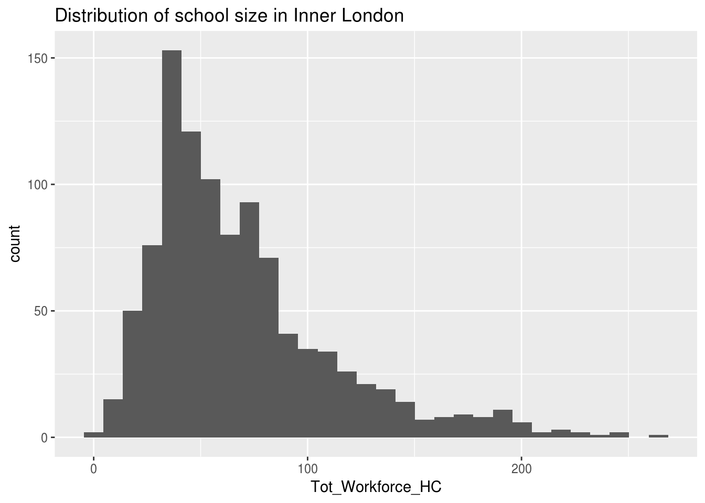

Chapter 9 Functions
We’ve used a lot of functions up until now, and understand the format of a function, with the function name and then the arguments inside the brackets. It essentially takes the form:
Where the verb is the thing we want to do, the noun (as the first argument) is the object we want to do it to, and the adverbs (as the subsequent arguments) are the descriptions of how we want to do it.
However, there’s going to come a time when we want to do the same thing again and again, to a lot of different objectives, and there won’t be a specific function to write it. Don’t worry though, you can do write your own functions.
9.1 Writing functions
A function is comprised of three parts:
So, a function that divides an object by 100 looks like this:
Here x is the noun that we’re doing something to. To create the function, simply run that code.
Activity A10.1: Use mutate and multiply Perc_PT_Teaching_Staff_ by 100 in a new column called perc_pt_test.
Activity A10.2: Remember the code from the iteration section on deciding whether a fictional teacher was male or female?
Turn that into a function, with the random number as the ‘noun’.
Once you’ve written it, run it with a few different numbers in the argument.
It’s also really handy for producing graphs when we want to filter them by different categories. Say we wanted to look at a histogram of the total school workforce, to get an idea of the distribution of school sizes in a particular region, we could make a graph like this (with Inner London as an example):
ggplot(swfc_16 %>% filter(Government_Office_Region_Name == 'Inner London'),
aes(Tot_Workforce_HC)) +
geom_histogram() +
ggtitle('Distribution of school size in Inner London')
However, ‘Inner London’ could be any one of the 9 other regions in England - we could vary this value. By varying it we are making it a parameter - a value in our input code that can change.
We can produce exactly the same output by replacing the string ‘Inner London’ with an object name, and creating that object before we create the graph (remember the paste0 function that we used in the iteration section).
region_name <- 'Inner London'
ggplot(swfc_16 %>% filter(Government_Office_Region_Name == region_name),
aes(Tot_Workforce_HC)) +
geom_histogram() +
ggtitle(paste0('Distribution of school size in ',region_name))
Activity A10.3: Using the code above, create a function which you could put in any region name, and as long as that region is correct, the function produces a graph.
9.2 Applying functions repetitively
Writing a lot of code get boring and laborious. Writing a lot of code that does the same thing again and again gets really boring and laborious. It can also lead to errors - if you copy and paste code enough times eventually you’ll make a mistake, which could lead to incorrect analysis.
However, as already mentioned, if you’re doing something again and again, then building a function is really useful. Suppose we do want to create graphs of all 10 regions, using the code above? We have the function to produce a graph, what we need now is to work out how to repeat the graph again and again, changing the region parameter.
We could use a for loop, but remember that’s not the most effective way. We want to ‘vectorise our code’.
A function called lapply applies a function to a list of objects.Activity A10.3: The Government_Office_Region_Name column is a factor column - use levels() to generate a list of the different possible entries to that column
The lapply function works in the following way:
The word function at the start of the second argument specifies that you’re about to write a function name, and essentially says ‘make each object in the list in the first argument the value of argument_name and apply the specific function to it’.
You can choose any string you like for argument_name, as long as it’s the same in both places.Activity A10.3: Use lapply to print a graph showing the distribution of school sizes in the Plot pane for every single region in England.
We can also use lapply to do the same thing to data in multiple columns. The difference here is that we want to turn the outputs of the lapply into an object. That object just so happens to be the same thing that goes in to the first argument in lapply. So if we wanted to turn all the columns with ‘Perc’ in the column title, that is those columns that are a percentage, from a number out of 100 to a number out of 1, by dividing by 100, we’d apply the following code:
Let’s break this down:
- swfc_16[,grep(“Perc”, colnames(swfc_16))] are all the columns in swfc_16 which contain ‘Perc’. The function grep finds all the columns which contain the substring ‘Perc’.
- Within lapply, the first argument is the same set of columns - we’re essentially doing an update on those columns
- The function we’re applying is my_func, which divided the object by 100
Activity A10.3: Use lapply to turn columns 6 to 10 (swfc_16[,grep(“Perc”, c(6:10))]) into character columns, from factor columns.